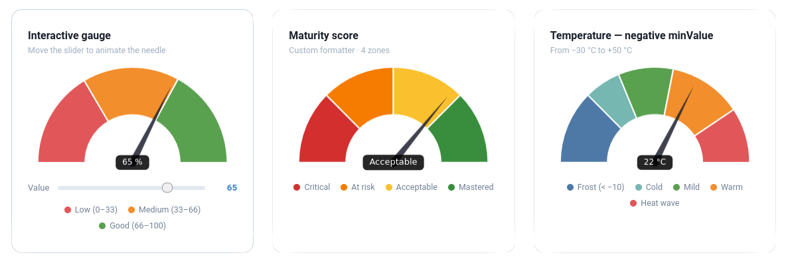

@sourcentis/chartjs-gauge¶
A Chart.js plugin that adds a gauge chart type — a half-doughnut with an animated needle and a configurable value label.



Features¶
- Gauge chart type (
type: 'gauge') built on Chart.js's doughnut controller - Animated needle with configurable radius, width, length, and color
- Value label with custom formatter, background, border-radius, padding, and color
- Supports
minValueto offset the gauge starting point - Per-dataset
needleoverride — multiple needles in one chart - Compatible with Chart.js v4
- Works as a Laravel Composer package (publishes pre-built assets) or a standalone npm package
Installation¶
npm / yarn¶
npm install chart.js @sourcentis/chartjs-gauge
# or
yarn add chart.js @sourcentis/chartjs-gauge
Composer (Laravel)¶
composer require sourcentis/chartjs-gauge
Then publish the pre-built assets:
php artisan vendor:publish --tag=chartjs-gauge-assets
This copies the dist/ files to public/vendor/chartjs-gauge/.
Quick Start¶
ES module (Vite / webpack)¶
import { Chart } from "chart.js";
import "@sourcentis/chartjs-gauge"; // auto-registers the controller
const ctx = document.getElementById("myGauge");
new Chart(ctx, {
type: "gauge",
data: {
datasets: [{
value: 65, // needle position
data: [33, 66, 100], // segment boundaries
backgroundColor: ["#E15759", "#F28E2B", "#59A14F"],
}],
},
options: {
needle: {
radiusPercentage: 2,
widthPercentage: 3.2,
lengthPercentage: 80,
color: "rgba(0, 0, 0, 1)",
},
valueLabel: {
display: true,
formatter: (value) => `${value}%`,
color: "rgba(255, 255, 255, 1)",
backgroundColor: "rgba(0, 0, 0, 0.8)",
},
},
});
CDN (UMD)¶
<script src="https://cdn.jsdelivr.net/npm/chart.js@4/dist/chart.umd.min.js"></script>
<script src="https://cdn.jsdelivr.net/npm/@sourcentis/chartjs-gauge@latest/dist/chartjs-gauge.min.js"></script>
<canvas id="myGauge"></canvas>
<script>
new Chart(document.getElementById("myGauge"), {
type: "gauge",
data: {
datasets: [{
value: 65,
data: [33, 66, 100],
backgroundColor: ["#E15759", "#F28E2B", "#59A14F"],
}],
},
});
</script>
Dataset Properties¶
| Property | Type | Default | Description |
|---|---|---|---|
value |
number |
— | Required. Current needle position. |
minValue |
number |
0 |
Minimum gauge value (offset starting point). |
data |
number[] |
— | Required. Segment boundary values (cumulative). |
backgroundColor |
string[] |
— | Colors for each segment. |
needle |
object |
— | Per-dataset needle override (see Needle options). |
valueLabel |
object |
— | Per-dataset value label override ({ display: false } to hide). |
Segments vs. value¶
data defines the segment boundaries on the gauge arc. The value property controls where the needle points independently of the segments.
// Three segments: 0–33 (red), 33–66 (orange), 66–100 (green)
// Needle at 50 (in the orange zone)
datasets: [{
value: 50,
data: [33, 66, 100],
backgroundColor: ["#E15759", "#F28E2B", "#59A14F"],
}]
Using minValue¶
// Gauge from -20 to +20, needle at +5
datasets: [{
value: 5,
minValue: -20,
data: [-10, 0, 10, 20],
backgroundColor: ["#d32f2f", "#ef5350", "#66bb6a", "#2e7d32"],
}]
Options¶
Needle¶
Configure via options.needle (or override per dataset with dataset.needle):
| Option | Type | Default | Description |
|---|---|---|---|
radiusPercentage |
number |
2 |
Needle pivot circle radius as % of chart width. |
widthPercentage |
number |
3.2 |
Needle base width as % of chart width. |
lengthPercentage |
number |
80 |
Needle length as % of the arc depth (inner→outer radius). |
color |
string |
"rgba(0, 0, 0, 1)" |
Needle and pivot circle fill color. |
options: {
needle: {
radiusPercentage: 2,
widthPercentage: 3.2,
lengthPercentage: 80,
color: "rgba(0, 0, 0, 1)",
},
}
Per-dataset needle
You can override needle on each dataset to get multiple needles in one gauge
(e.g. an analog clock with hour and minute hands):
js
datasets: [
{ value: minuteVal, data: [...], needle: { color: "#36a2eb", lengthPercentage: 88 } },
{ value: hourVal, data: [...], needle: { color: "#ff9f40", lengthPercentage: 72 } },
]
Value Label¶
Configure via options.valueLabel:
| Option | Type | Default | Description |
|---|---|---|---|
display |
boolean |
true |
Show or hide the label. |
formatter |
function |
(v) => String(v) |
Format the displayed value. |
fontSize |
number |
12 |
Font size in pixels. |
color |
string |
"rgba(255, 255, 255, 1)" |
Text color. |
backgroundColor |
string |
"rgba(0, 0, 0, 0.85)" |
Background fill color. |
borderRadius |
number |
5 |
Background corner radius in pixels. |
padding |
object |
{top:6, right:14, bottom:6, left:14} |
Inner padding. |
Formatter examples¶
formatter: (value) => `${value}%` // percentage
formatter: (value) => value >= 80 ? "Excellent" : "Moyen" // label
formatter: (value) => new Intl.NumberFormat("fr-FR",
{ style: "currency", currency: "EUR" }).format(value) // currency
Arc (inherited from Doughnut)¶
| Option | Default | Description |
|---|---|---|
rotation |
-90 |
Start angle in degrees. |
circumference |
180 |
Arc span in degrees. |
cutout |
"50%" |
Inner radius as % of outer radius. |
360° gauge
For a full-circle gauge, set circumference: 360.
For it to start at 12 o'clock, use rotation: 0
(Chart.js internally shifts the start angle by −90°).
Examples¶
Maturity score (0–100, three zones)¶
new Chart(ctx, {
type: "gauge",
data: {
datasets: [{
value: 72,
data: [40, 80, 100],
backgroundColor: ["#E15759", "#F28E2B", "#59A14F"],
}],
},
options: {
needle: { color: "#333" },
valueLabel: {
formatter: (v) => `${v} / 100`,
backgroundColor: "#333",
},
},
});
Full-circle gauge (360°)¶
new Chart(ctx, {
type: "gauge",
data: {
datasets: [{
value: 270,
data: [90, 180, 270, 360],
backgroundColor: ["#4e79a7", "#f28e2b", "#e15759", "#76b7b2"],
}],
},
options: {
rotation: -180,
circumference: 360,
cutout: "70%",
valueLabel: { formatter: (v) => `${v}°` },
},
});
With Chart.js datalabels plugin¶
import ChartDataLabels from "chartjs-plugin-datalabels";
Chart.register(ChartDataLabels);
options: {
plugins: {
datalabels: {
formatter: (value, ctx) => ctx.chart.data.labels[ctx.dataIndex],
},
},
}
Laravel / Vite Integration¶
Add an alias in vite.config.mjs:
import path from "path";
export default defineConfig({
resolve: {
alias: {
"@sourcentis/chartjs-gauge": path.resolve(
__dirname,
"vendor/sourcentis/chartjs-gauge/dist/chartjs-gauge.esm.js"
),
},
},
});
Then import normally:
import "@sourcentis/chartjs-gauge";
API¶
Named export¶
import { GaugeController } from "@sourcentis/chartjs-gauge";
// Manual registration (if you don't want auto-registration on import)
Chart.register(GaugeController, ArcElement);
Default export¶
import ChartjsGauge from "@sourcentis/chartjs-gauge";
ChartjsGauge.install(Chart); // same as Chart.register(GaugeController, ArcElement)
Browser Support¶
Same as Chart.js v4 — all modern browsers (Chrome, Firefox, Safari, Edge).
Contributing¶
git clone https://github.com/sourcentis/chartjs-gauge
npm install
npm run dev # watch mode
npm run build # production build
License¶
Acknowledgements¶
Inspired by chartjs-gauge by haiiaaa and chartjs-gauge-v3 by uk-taniyama.